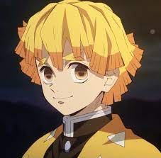

Inicio da História
Capitulo 1
Ao chegar em casa, Tanjirō descobre que sua família foi cruelmente massacrada por demônios. Apenas uma de suas irmãs, Nezuko, sobreviveu ao ataque, mas não sem consequências. A jovem Nezuko foi transformada em um demônio, mas misteriosamente conseguiu manter alguns sinais de emoções e pensamentos humanos.
Capitulo 2
Volume 2 de Demon Slayer – Kimetsu no Yaiba Durante o teste de Seleção Final que deve ser passado para se juntar ao Corpo de Caçadores de Demônios, Tanjiro enfrenta um Demônio desfigurado e usa as técnicas ensinadas por seu mestre, Sakonji Urokodaki!
- Tankiro Kamado
- Zenitsu 
- Nezuko Kamado
- Muzan


Tanjiro Sobrevive ao Ataque de um Oni. Vai embusca de melhorar e treinar para proteger sua irmã.
Nezuko Sobrevive ao Ataque de um Oni, e vira um Oni
Tomioka Defende Ambos, Tanjiro e Nezuko no Ataque
UrokodakiTreina Tanjiro em sua Jornada
Kimetsu Voltará em 2024
© Mathzip 2022